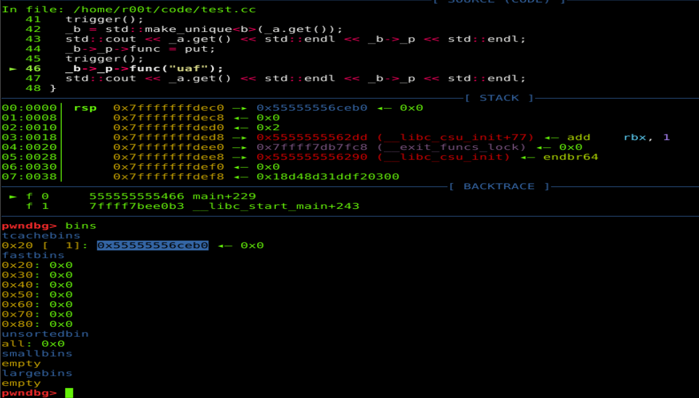

reference:https://securitylab.github.com/research/chromium-ipc-vulnerabilities/
1.P0_1735:
https://bugs.chromium.org/p/project-zero/issues/detail?id=1735
PaymentRequest::Init初始化了一个spec智能指针
spec_ = std::make_unique<PaymentRequestSpec>(xx)
PaymentRequestDialogView::ShowInitialPaymentSheet()里创建PaymentSheetViewController类型的智能指针时调用其构造函数，将unique_ptr spec_转化成纯指针(raw pointer)。由于PaymentRequest::Init可以被多次调用，如果其在调用时spec_已经初始化，unique_ptr spec_会被释放掉；但是PaymentSheetViewController构造函数被调用时的raw pointer spec_并没有释放，在PaymentSheetViewController访问spec_会导致uaf。
即，例如如下代码，如果trigger()可以被多次调用，_b::_p会uaf
1 2 3 4 5 6 7 8 9 10 11 12 13 14 15 16 17 18 19 20 21 22 23 24 25 26 27 28 29 30 31 32 33 34 35 36 37 38 39 40 41 42 43 44 45 46 47 48 #include "iostream" #include "memory" void put(std::string str){std::cout << str << std::endl;} class a { public: a() { std::cout << "a constructor" << std::endl; } ~a(){std::cout << "a deconstructor" << std::endl;} void (*func)(std::string str); }; class b : public a { public: b(a *_p):_p(_p) { std::cout << "b constructor" << std::endl; }; ~b(){std::cout << "b decontructor" << std::endl;} a *_p; }; std::unique_ptr<class a> _a; std::unique_ptr<class b> _b; void trigger() { _a = std::make_unique<a>(); } int main() { trigger(); _b = std::make_unique<b>(_a.get()); std::cout << _a.get() << std::endl << _b->_p << std::endl; _b->_p->func = put; trigger(); //[***] _b->_p->func("uaf"); std::cout << _a.get() << std::endl << _b->_p << std::endl; }
在[***]处，_b->_p会uaf

或者直接使用asan编译可以看到uaf的asan信息。
1 2 3 4 g++ xx.cc -g -fsanitize=address -o xx ================================================================= ==2451510==ERROR: AddressSanitizer: heap-use-after-free on address 0x602000000010 at pc 0x555d4107396b bp 0x7fffac937230 sp 0x7fffac937220
2.